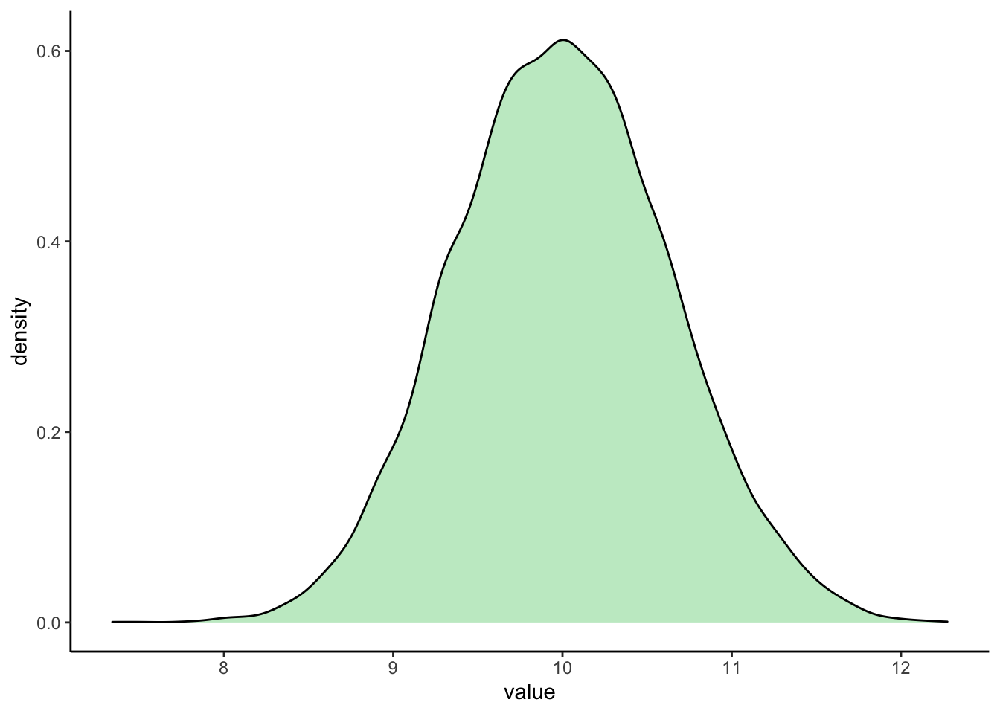
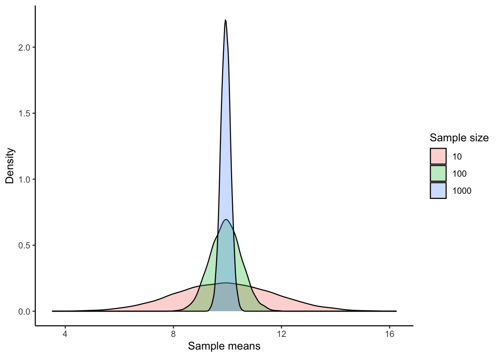
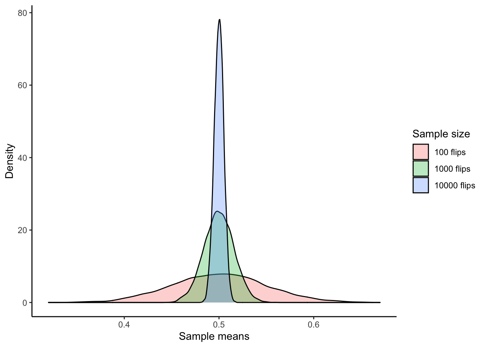
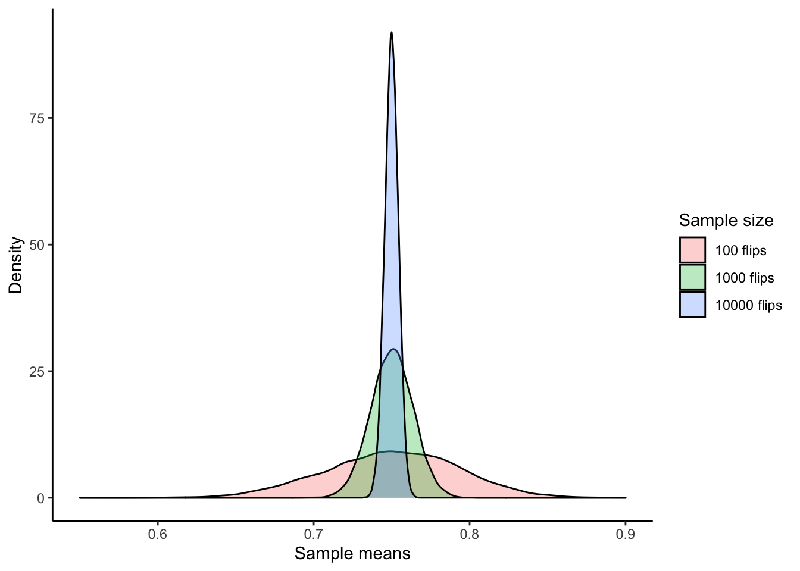

6 More dplyr
6.1 Review and preparation
In the previous chapter, we introduced three important data wrangling concepts:
filter()for subsetting rowsselect()for subsetting columns (i.e., variables)- The pipe operator
%>%, which feeds the left-hand side as the first argument to the expression on the right-hand side
We also discussed dplyr’s role inside the tidyverse and tibbles:
dplyris a core package in the tidyverse meta-package. Since we often make incidental usage of the others, we will load dplyr and the others vialibrary(tidyverse).- The
tidyverseembraces a special flavor of data frame, called a tibble. Thegapminderdataset is stored as a tibble.
Let’s load the tidyverse and gapminder.
library(tidyverse)
library(gapminder)We’re going to make changes to the gapminder tibble. To eliminate any fear that you’re damaging the data that comes with the package, let’s create an explicit copy of gapminder for our experiments. Don’t worry if you modify the gapminder package, since your changes are temporary (i.e., you can reload the gapminder to get a fresh dataset).
my_gap <- gapminderPay close attention when we evaluate statements but let the output just print to screen…
## let output print to screen, but do not store
my_gap %>% filter(country == "Canada")## # A tibble: 12 x 6
## country continent year lifeExp pop gdpPercap
## <fct> <fct> <int> <dbl> <int> <dbl>
## 1 Canada Americas 1952 68.8 14785584 11367.
## 2 Canada Americas 1957 70.0 17010154 12490.
## 3 Canada Americas 1962 71.3 18985849 13462.
## 4 Canada Americas 1967 72.1 20819767 16077.
## 5 Canada Americas 1972 72.9 22284500 18971.
## 6 Canada Americas 1977 74.2 23796400 22091.
## 7 Canada Americas 1982 75.8 25201900 22899.
## 8 Canada Americas 1987 76.9 26549700 26627.
## 9 Canada Americas 1992 78.0 28523502 26343.
## 10 Canada Americas 1997 78.6 30305843 28955.
## 11 Canada Americas 2002 79.8 31902268 33329.
## 12 Canada Americas 2007 80.7 33390141 36319.… versus when we assign the output to a new variable, or overwritting one that already exists.
## store the output as an R object
my_precious <- my_gap %>% filter(country == "Canada")6.2 Use mutate() to add new variables
Imagine we wanted to recover each country’s GDP. After all, the Gapminder data has a variable for population and GDP per capita. Let’s multiply them together to get the GDP of the whole country.
The mutate() function defines and inserts new variables into a data frame/tibble. You can refer to existing variables by name.
my_gap %>% mutate(gdp = pop * gdpPercap)## # A tibble: 1,704 x 7
## country continent year lifeExp pop gdpPercap gdp
## <fct> <fct> <int> <dbl> <int> <dbl> <dbl>
## 1 Afghanistan Asia 1952 28.8 8425333 779. 6567086330.
## 2 Afghanistan Asia 1957 30.3 9240934 821. 7585448670.
## 3 Afghanistan Asia 1962 32.0 10267083 853. 8758855797.
## 4 Afghanistan Asia 1967 34.0 11537966 836. 9648014150.
## 5 Afghanistan Asia 1972 36.1 13079460 740. 9678553274.
## 6 Afghanistan Asia 1977 38.4 14880372 786. 11697659231.
## 7 Afghanistan Asia 1982 39.9 12881816 978. 12598563401.
## 8 Afghanistan Asia 1987 40.8 13867957 852. 11820990309.
## 9 Afghanistan Asia 1992 41.7 16317921 649. 10595901589.
## 10 Afghanistan Asia 1997 41.8 22227415 635. 14121995875.
## # … with 1,694 more rowsIf you don’t want to add a new column to your tibble, you can use transmute(). It works just like mutate() except it only keeps the column(s) you specify.
Let’s save our output in a new tibble called gap_gdp. Recall that saving the return of functions generally suppresses printing to the console. If you want to see the output, either type or print the variable.
gap_gdp <- my_gap %>% transmute(country, gdp = pop * gdpPercap)
gap_gdp # or use print(gap_gdp)## # A tibble: 1,704 x 2
## country gdp
## <fct> <dbl>
## 1 Afghanistan 6567086330.
## 2 Afghanistan 7585448670.
## 3 Afghanistan 8758855797.
## 4 Afghanistan 9648014150.
## 5 Afghanistan 9678553274.
## 6 Afghanistan 11697659231.
## 7 Afghanistan 12598563401.
## 8 Afghanistan 11820990309.
## 9 Afghanistan 10595901589.
## 10 Afghanistan 14121995875.
## # … with 1,694 more rowsHmmm… those GDP numbers are almost uselessly large and abstract. Consider the advice of Randall Munroe of xkcd:
One thing that bothers me is large numbers presented without context… ‘If I added a zero to this number, would the sentence containing it mean something different to me?’ If the answer is ‘no,’ maybe the number has no business being in the sentence in the first place."
Maybe it would be more meaningful to consumers of my tables and figures to stick with GDP per capita. But what if I reported GDP per capita, relative to some benchmark country. Since Canada is my home country, I’ll go with that.
I need to create a new variable that is gdpPercap divided by Canadian gdpPercap, taking care that I always divide two numbers that pertain to the same year.
Here is what we need to do:
- Filter down to the rows for Canada.
- Create a new temporary variable in
my_gap:- Extract the
gdpPercapvariable from the Canadian data. - Replicate it once per country in the dataset, so it has the right length.
- Extract the
- Divide raw
gdpPercapby this Canadian figure. - Discard the temporary variable of replicated Canadian
gdpPercap.
ctib <- my_gap %>% filter(country == "Canada")
## this is a semi-dangerous way to add this variable
## I'd prefer to join on year, but we haven't covered joins yet
my_gap <- my_gap %>%
mutate(tmp = rep(ctib$gdpPercap, nlevels(country)),
gdpPercapRel = gdpPercap / tmp,
tmp = NULL)Note that, mutate() builds new variables sequentially so you can reference earlier ones (like tmp) when defining later ones (like gdpPercapRel). Also, you can get rid of a variable by setting it to NULL.
How could we sanity check that this worked? The Canadian values for gdpPercapRel better all be 1!
my_gap %>%
filter(country == "Canada") %>%
select(country, year, gdpPercapRel)## # A tibble: 12 x 3
## country year gdpPercapRel
## <fct> <int> <dbl>
## 1 Canada 1952 1
## 2 Canada 1957 1
## 3 Canada 1962 1
## 4 Canada 1967 1
## 5 Canada 1972 1
## 6 Canada 1977 1
## 7 Canada 1982 1
## 8 Canada 1987 1
## 9 Canada 1992 1
## 10 Canada 1997 1
## 11 Canada 2002 1
## 12 Canada 2007 1I perceive Canada to be a “high GDP” country, so I predict that the distribution of gdpPercapRel is located below 1, possibly even well below. Check your intuition!
summary(my_gap$gdpPercapRel)## Min. 1st Qu. Median Mean 3rd Qu. Max.
## 0.007236 0.061648 0.171521 0.326659 0.446564 9.534690The relative GDP per capita numbers are, in general, well below 1. We see that most of the countries covered by this dataset have substantially lower GDP per capita, relative to Canada, across the entire time period.
Remember: Trust No One. Including (especially?) yourself. Always try to find a way to check that you’ve done what meant to. Prepare to be horrified.
6.3 Use arrange() to row-order data
The arrange() function reorders rows in a data frame/tibble. Imagine you wanted this data ordered by year then country, as opposed to by country then year. Remember, to save the output, you must assign it to a variable.
my_gap %>% arrange(year, country)## # A tibble: 1,704 x 7
## country continent year lifeExp pop gdpPercap gdpPercapRel
## <fct> <fct> <int> <dbl> <int> <dbl> <dbl>
## 1 Afghanistan Asia 1952 28.8 8425333 779. 0.0686
## 2 Albania Europe 1952 55.2 1282697 1601. 0.141
## 3 Algeria Africa 1952 43.1 9279525 2449. 0.215
## 4 Angola Africa 1952 30.0 4232095 3521. 0.310
## 5 Argentina Americas 1952 62.5 17876956 5911. 0.520
## 6 Australia Oceania 1952 69.1 8691212 10040. 0.883
## 7 Austria Europe 1952 66.8 6927772 6137. 0.540
## 8 Bahrain Asia 1952 50.9 120447 9867. 0.868
## 9 Bangladesh Asia 1952 37.5 46886859 684. 0.0602
## 10 Belgium Europe 1952 68 8730405 8343. 0.734
## # … with 1,694 more rowsOr maybe you want just the data from 2007, sorted on life expectancy?
my_gap %>%
filter(year == 2007) %>%
arrange(lifeExp)## # A tibble: 142 x 7
## country continent year lifeExp pop gdpPercap gdpPercapRel
## <fct> <fct> <int> <dbl> <int> <dbl> <dbl>
## 1 Swaziland Africa 2007 39.6 1.13e6 4513. 0.124
## 2 Mozambique Africa 2007 42.1 2.00e7 824. 0.0227
## 3 Zambia Africa 2007 42.4 1.17e7 1271. 0.0350
## 4 Sierra Leone Africa 2007 42.6 6.14e6 863. 0.0237
## 5 Lesotho Africa 2007 42.6 2.01e6 1569. 0.0432
## 6 Angola Africa 2007 42.7 1.24e7 4797. 0.132
## 7 Zimbabwe Africa 2007 43.5 1.23e7 470. 0.0129
## 8 Afghanistan Asia 2007 43.8 3.19e7 975. 0.0268
## 9 Central African Repub… Africa 2007 44.7 4.37e6 706. 0.0194
## 10 Liberia Africa 2007 45.7 3.19e6 415. 0.0114
## # … with 132 more rowsOh, you’d like to sort on life expectancy in descending order? Then use desc().
my_gap %>%
filter(year == 2007) %>%
arrange(desc(lifeExp))## # A tibble: 142 x 7
## country continent year lifeExp pop gdpPercap gdpPercapRel
## <fct> <fct> <int> <dbl> <int> <dbl> <dbl>
## 1 Japan Asia 2007 82.6 127467972 31656. 0.872
## 2 Hong Kong, China Asia 2007 82.2 6980412 39725. 1.09
## 3 Iceland Europe 2007 81.8 301931 36181. 0.996
## 4 Switzerland Europe 2007 81.7 7554661 37506. 1.03
## 5 Australia Oceania 2007 81.2 20434176 34435. 0.948
## 6 Spain Europe 2007 80.9 40448191 28821. 0.794
## 7 Sweden Europe 2007 80.9 9031088 33860. 0.932
## 8 Israel Asia 2007 80.7 6426679 25523. 0.703
## 9 France Europe 2007 80.7 61083916 30470. 0.839
## 10 Canada Americas 2007 80.7 33390141 36319. 1
## # … with 132 more rowsI advise that your analyses NEVER rely on rows or variables being in a specific order. But it’s still true that human beings write the code and the interactive development process can be much nicer if you reorder the rows of your data as you go along. Also, once you are preparing tables for human eyeballs, it is imperative that you step up and take control of row order.
6.4 Use rename() to rename variables
When I started programming, I was a camelCase person, but now I’m all about snake_case. Let’s rename some variables!
my_gap %>%
rename(life_exp = lifeExp,
gdp_percap = gdpPercap,
gdp_percap_rel = gdpPercapRel)## # A tibble: 1,704 x 7
## country continent year life_exp pop gdp_percap gdp_percap_rel
## <fct> <fct> <int> <dbl> <int> <dbl> <dbl>
## 1 Afghanistan Asia 1952 28.8 8425333 779. 0.0686
## 2 Afghanistan Asia 1957 30.3 9240934 821. 0.0657
## 3 Afghanistan Asia 1962 32.0 10267083 853. 0.0634
## 4 Afghanistan Asia 1967 34.0 11537966 836. 0.0520
## 5 Afghanistan Asia 1972 36.1 13079460 740. 0.0390
## 6 Afghanistan Asia 1977 38.4 14880372 786. 0.0356
## 7 Afghanistan Asia 1982 39.9 12881816 978. 0.0427
## 8 Afghanistan Asia 1987 40.8 13867957 852. 0.0320
## 9 Afghanistan Asia 1992 41.7 16317921 649. 0.0246
## 10 Afghanistan Asia 1997 41.8 22227415 635. 0.0219
## # … with 1,694 more rowsI did NOT assign the post-rename object back to my_gap because that would make the chunks in this tutorial harder to copy/paste and run out of order. In real life, I would probably assign this back to my_gap, in a data preparation script, and proceed with the new variable names.
6.4.1 Use select() to rename and reposition variables
You’ve seen simple uses of select(). There are two tricks you might enjoy:
select()can rename the variables you request to keep.select()can be used witheverything()to hoist a variable up to the front of the tibble.
my_gap %>%
filter(country == "Burundi", year > 1996) %>%
select(yr = year, lifeExp, gdpPercap) %>%
select(gdpPercap, everything())## # A tibble: 3 x 3
## gdpPercap yr lifeExp
## <dbl> <int> <dbl>
## 1 463. 1997 45.3
## 2 446. 2002 47.4
## 3 430. 2007 49.6everything() is one of several helpers for variable selection. Read the documentation to see the rest.
6.5 Perform tasks on subsets with group_by()
I have found collaborators love to ask seemingly innocuous questions like, “which country experienced the sharpest 5-year drop in life expectancy?” In fact, that is a totally natural question to ask. But if you are using a language that doesn’t know about data, it’s an incredibly annoying question to answer.
dplyr offers powerful tools to solve this class of problem.
group_by()adds extra structure to your dataset – grouping information – which lays the groundwork for computations within the groups.summarize()takes a dataset with \(n\) observations, computes requested summaries, and returns a dataset with 1 observation.- Window functions take a dataset with \(n\) observations and return a dataset with \(n\) observations.
- You can also do very general computations on your groups with
do().
Combined with the verbs you already know, these new tools allow you to solve an extremely diverse set of problems with relative ease.
6.5.1 Counting
Let’s start with simple counting. How many observations do we have per continent? The n() function counts the number of observations in a particular group.
my_gap %>%
group_by(continent) %>%
summarize(n = n())## # A tibble: 5 x 2
## continent n
## <fct> <int>
## 1 Africa 624
## 2 Americas 300
## 3 Asia 396
## 4 Europe 360
## 5 Oceania 24Let us pause here to think about the tidyverse. You could get these same frequencies using table() from base R.
table(gapminder$continent)##
## Africa Americas Asia Europe Oceania
## 624 300 396 360 24str(table(gapminder$continent))## 'table' int [1:5(1d)] 624 300 396 360 24
## - attr(*, "dimnames")=List of 1
## ..$ : chr [1:5] "Africa" "Americas" "Asia" "Europe" ...But the object of class table that is returned makes downstream computation a bit fiddlier than we would like. For example, it’s too bad the continent levels come back only as names and not as a proper factor, with the original set of levels.
The tally() function is a convenient function that counts rows.
my_gap %>%
group_by(continent) %>%
tally()## # A tibble: 5 x 2
## continent n
## <fct> <int>
## 1 Africa 624
## 2 Americas 300
## 3 Asia 396
## 4 Europe 360
## 5 Oceania 24The count() function is an even more convenient function that does both grouping and counting.
my_gap %>% count(continent)## # A tibble: 5 x 2
## continent n
## <fct> <int>
## 1 Africa 624
## 2 Americas 300
## 3 Asia 396
## 4 Europe 360
## 5 Oceania 24What if we wanted to add the number of unique countries for each continent? You can compute multiple summaries inside summarize(). Use the n_distinct() function to count the number of distinct countries within each continent.
my_gap %>%
group_by(continent) %>%
summarize(n = n(),
n_countries = n_distinct(country))## # A tibble: 5 x 3
## continent n n_countries
## <fct> <int> <int>
## 1 Africa 624 52
## 2 Americas 300 25
## 3 Asia 396 33
## 4 Europe 360 30
## 5 Oceania 24 26.5.2 General summarization
The functions you’ll apply within summarize() include classical statistical summaries, like mean(), median(), var(), sd(), mad(), IQR(), min(), and max(). Remember they are functions that take \(n\) inputs and distill them down into 1 output.
Although this may be statistically ill-advised, let’s compute the average life expectancy by continent.
my_gap %>%
group_by(continent) %>%
summarize(avg_lifeExp = mean(lifeExp))## # A tibble: 5 x 2
## continent avg_lifeExp
## <fct> <dbl>
## 1 Africa 48.9
## 2 Americas 64.7
## 3 Asia 60.1
## 4 Europe 71.9
## 5 Oceania 74.3summarize_at() applies the same summary function(s) to multiple variables. Let’s compute average and median life expectancy and GDP per capita by continent by year … but only for 1952 and 2007.
my_gap %>%
filter(year %in% c(1952, 2007)) %>%
group_by(continent, year) %>%
summarize_at(vars(lifeExp, gdpPercap), funs(mean, median))## # A tibble: 10 x 6
## # Groups: continent [5]
## continent year lifeExp_mean gdpPercap_mean lifeExp_median gdpPercap_median
## <fct> <int> <dbl> <dbl> <dbl> <dbl>
## 1 Africa 1952 39.1 1253. 38.8 987.
## 2 Africa 2007 54.8 3089. 52.9 1452.
## 3 Americas 1952 53.3 4079. 54.7 3048.
## 4 Americas 2007 73.6 11003. 72.9 8948.
## 5 Asia 1952 46.3 5195. 44.9 1207.
## 6 Asia 2007 70.7 12473. 72.4 4471.
## 7 Europe 1952 64.4 5661. 65.9 5142.
## 8 Europe 2007 77.6 25054. 78.6 28054.
## 9 Oceania 1952 69.3 10298. 69.3 10298.
## 10 Oceania 2007 80.7 29810. 80.7 29810.Let’s focus just on Asia. What are the minimum and maximum life expectancies seen by year?
my_gap %>%
filter(continent == "Asia") %>%
group_by(year) %>%
summarize(min_lifeExp = min(lifeExp), max_lifeExp = max(lifeExp))## # A tibble: 12 x 3
## year min_lifeExp max_lifeExp
## <int> <dbl> <dbl>
## 1 1952 28.8 65.4
## 2 1957 30.3 67.8
## 3 1962 32.0 69.4
## 4 1967 34.0 71.4
## 5 1972 36.1 73.4
## 6 1977 31.2 75.4
## 7 1982 39.9 77.1
## 8 1987 40.8 78.7
## 9 1992 41.7 79.4
## 10 1997 41.8 80.7
## 11 2002 42.1 82
## 12 2007 43.8 82.6Of course it would be much more interesting to see which country contributed these extreme observations. Is the minimum (maximum) always coming from the same country?We will tackle this with window functions shortly.
6.5.3 Computing with group-wise summaries
Don’t worry too much about this section if all the data wrangling is starting to become overwhelming – it’s mainly here for the curious.
Let’s make a new variable that is the years of life expectancy gained (lost) relative to 1952, for each individual country. We group by country and use mutate() to make a new variable. The first() function extracts the first value from a vector. Notice that first() is operating on the vector of life expectancies within each country group.
new_var <- my_gap %>%
group_by(country) %>%
select(country, year, lifeExp) %>%
mutate(lifeExp_gain = lifeExp - first(lifeExp)) %>%
filter(year < 1963)
new_var## # A tibble: 426 x 4
## # Groups: country [142]
## country year lifeExp lifeExp_gain
## <fct> <int> <dbl> <dbl>
## 1 Afghanistan 1952 28.8 0
## 2 Afghanistan 1957 30.3 1.53
## 3 Afghanistan 1962 32.0 3.20
## 4 Albania 1952 55.2 0
## 5 Albania 1957 59.3 4.05
## 6 Albania 1962 64.8 9.59
## 7 Algeria 1952 43.1 0
## 8 Algeria 1957 45.7 2.61
## 9 Algeria 1962 48.3 5.23
## 10 Angola 1952 30.0 0
## # … with 416 more rowsWithin country, we take the difference between life expectancy in year \(i\) and life expectancy in 1952. Therefore we always see zeroes for 1952 and, for most countries, a sequence of positive and increasing numbers.
6.5.4 Window functions (OPTIONAL)
Window functions take \(n\) inputs and give back \(n\) outputs. Furthermore, the output depends on all the values. So rank() is a window function but sum() is not. Here we use window functions based on ranks and offsets.
Let’s revisit the worst and best life expectancies in Asia over time, but retaining info about which country contributes these extreme values.
my_gap %>%
filter(continent == "Asia") %>%
select(year, country, lifeExp) %>%
group_by(year) %>%
filter(min_rank(desc(lifeExp)) < 2 | min_rank(lifeExp) < 2) %>%
arrange(year)## # A tibble: 24 x 3
## # Groups: year [12]
## year country lifeExp
## <int> <fct> <dbl>
## 1 1952 Afghanistan 28.8
## 2 1952 Israel 65.4
## 3 1957 Afghanistan 30.3
## 4 1957 Israel 67.8
## 5 1962 Afghanistan 32.0
## 6 1962 Israel 69.4
## 7 1967 Afghanistan 34.0
## 8 1967 Japan 71.4
## 9 1972 Afghanistan 36.1
## 10 1972 Japan 73.4
## # … with 14 more rowsWe see that (min = Afghanistan, max = Japan) is the most frequent result, but Cambodia and Israel pop up at least once each as the min or max, respectively. That table should make you impatient for our upcoming work on tidying and reshaping data! Wouldn’t it be nice to have one row per year?
How did that actually work? First, I store and view a partial that leaves off the filter() statement. All of these operations should be familiar.
asia <- my_gap %>%
filter(continent == "Asia") %>%
select(year, country, lifeExp) %>%
group_by(year)
asia## # A tibble: 396 x 3
## # Groups: year [12]
## year country lifeExp
## <int> <fct> <dbl>
## 1 1952 Afghanistan 28.8
## 2 1957 Afghanistan 30.3
## 3 1962 Afghanistan 32.0
## 4 1967 Afghanistan 34.0
## 5 1972 Afghanistan 36.1
## 6 1977 Afghanistan 38.4
## 7 1982 Afghanistan 39.9
## 8 1987 Afghanistan 40.8
## 9 1992 Afghanistan 41.7
## 10 1997 Afghanistan 41.8
## # … with 386 more rowsNow we apply a window function: min_rank(). Since asia is grouped by year, min_rank() operates within mini-datasets, each for a specific year. Applied to the variable lifeExp, min_rank() returns the rank of each country’s observed life expectancy.
FYI, the min part just specifies how ties are broken. Here is an explicit peek at these within-year life expectancy ranks, in both the (default) ascending and descending order. If you specify rank(), ties will be denoted by .5. For instance:
x <- c(1, 2, 3, 3, 4)
min_rank(x)## [1] 1 2 3 3 5rank(x)## [1] 1.0 2.0 3.5 3.5 5.0For concreteness, I use mutate() to actually create these variables, even though I dropped this in the solution above. Let’s look at a bit of that.
asia %>%
mutate(le_rank = min_rank(lifeExp),
le_desc_rank = min_rank(desc(lifeExp))) %>%
filter(country %in% c("Afghanistan", "Japan", "Thailand"), year > 1995)## # A tibble: 9 x 5
## # Groups: year [3]
## year country lifeExp le_rank le_desc_rank
## <int> <fct> <dbl> <int> <int>
## 1 1997 Afghanistan 41.8 1 33
## 2 2002 Afghanistan 42.1 1 33
## 3 2007 Afghanistan 43.8 1 33
## 4 1997 Japan 80.7 33 1
## 5 2002 Japan 82 33 1
## 6 2007 Japan 82.6 33 1
## 7 1997 Thailand 67.5 12 22
## 8 2002 Thailand 68.6 12 22
## 9 2007 Thailand 70.6 12 22Afghanistan tends to present 1’s in the le_rank variable, Japan tends to present 1’s in the le_desc_rank variable and other countries, like Thailand, present less extreme ranks.
You can understand the original filter() statement now:
filter(min_rank(desc(lifeExp)) < 2 | min_rank(lifeExp) < 2)These two sets of ranks are formed on-the-fly, within year group, and filter() retains rows with rank less than 2, which means … the row with rank = 1. Since we do for ascending and descending ranks, we get both the min and the max.
If we had wanted just the min OR the max, an alternative approach using top_n() would have worked.
my_gap %>%
filter(continent == "Asia") %>%
select(year, country, lifeExp) %>%
arrange(year) %>%
group_by(year) %>%
#top_n(1, wt = lifeExp) ## gets the max
top_n(1, wt = desc(lifeExp)) ## gets the min## # A tibble: 12 x 3
## # Groups: year [12]
## year country lifeExp
## <int> <fct> <dbl>
## 1 1952 Afghanistan 28.8
## 2 1957 Afghanistan 30.3
## 3 1962 Afghanistan 32.0
## 4 1967 Afghanistan 34.0
## 5 1972 Afghanistan 36.1
## 6 1977 Cambodia 31.2
## 7 1982 Afghanistan 39.9
## 8 1987 Afghanistan 40.8
## 9 1992 Afghanistan 41.7
## 10 1997 Afghanistan 41.8
## 11 2002 Afghanistan 42.1
## 12 2007 Afghanistan 43.86.6 Introduction to visualization (OPTIONAL)
Although we will get into more serious plotting in future chapters, I want to give you a taste of the excitement to come.
Here, we will get sampling of the almighty ggplot2 package. Let’s look at a few basic examples.
If you want to compare continuous data with a few categories, either a bar plot or box plot would be a good bet. Let’s look at the 1952 gapminder data.
dat.1952 <- my_gap %>% filter(year == 1952)
ggplot(data = dat.1952, aes(x=continent, y=lifeExp)) +
geom_dotplot(binaxis = "y", stackdir = "center", dotsize = 0.5) +
geom_boxplot(alpha=0.3)## `stat_bindot()` using `bins = 30`. Pick better value with `binwidth`.
Look at this figure, what would you comment on the mean and variance of the data? Have you identified any outliers?
Now suppose we had no idea about what our data looks like, but we want to check the relationship between 2 continuous variables. A great place to start would be a scatter plot:
ggplot(data = dat.1952, aes(x = gdpPercap, y = lifeExp)) +
geom_point()
The scatter plot shows an upwards relationship—we will quantify this correlation in a future chapter.
To make gdpPercap look more like a straight line, we can plot it in a base 10 log scale using the function scale_x_log10(). While we’re at it, let’s also add colours to label different continents.
ggplot(data = dat.1952, aes(x = gdpPercap, y = lifeExp)) +
geom_point(aes(color = continent)) +
scale_x_log10()
We can also remove the grey background by setting the theme:
ggplot(data = dat.1952, aes(x = gdpPercap, y = lifeExp)) +
geom_point(aes(color = continent)) +
scale_x_log10() +
theme_classic()
Don’t worry too much about figures right now. We will cover data visualization in much more depth in future lessons.
6.7 Comprehensive practice
So let’s answer a “simple” question: which country experienced the sharpest 5-year drop in life expectancy (le)? Recall that this excerpt of the gapminder data only has data every five years, e.g. for 1952, 1957, etc. So this really means looking at life expectancy changes between adjacent timepoints.
At this point, the question is just too easy to answer, so find life expectancy by continent while we’re at it.
my_gap %>%
select(country, year, continent, lifeExp) %>%
group_by(continent, country) %>%
# within country, take (lifeExp in year i) - (lifeExp in year i - 1)
# positive means lifeExp went up, negative means it went down
mutate(le_delta = lifeExp - lag(lifeExp)) %>%
# within country, retain the worst lifeExp change = smallest or most negative
summarize(worst_le_delta = min(le_delta, na.rm = TRUE)) %>%
# within continent, retain the row with the lowest worst_le_delta
top_n(-1, wt = worst_le_delta) %>%
arrange(worst_le_delta)## `summarise()` has grouped output by 'continent'. You can override using the `.groups` argument.## # A tibble: 5 x 3
## # Groups: continent [5]
## continent country worst_le_delta
## <fct> <fct> <dbl>
## 1 Africa Rwanda -20.4
## 2 Asia Cambodia -9.10
## 3 Americas El Salvador -1.51
## 4 Europe Montenegro -1.46
## 5 Oceania Australia 0.170Now this data is interesting. Take a look at the life expectancy in Rwanda in 1987 and in 1992.
gapminder %>%
select(country, year, lifeExp) %>%
filter(year == 1987 | year == 1992, country == 'Rwanda')## # A tibble: 2 x 3
## country year lifeExp
## <fct> <int> <dbl>
## 1 Rwanda 1987 44.0
## 2 Rwanda 1992 23.6Ponder the real-life implications of this output for a while. What you’re seeing here is genocide in dry statistics on average life expectancy.
6.8 Data wrangling summary
Wow, we covered a lot of data wrangling! Don’t wory if you don’t understand everything the first time around. Programming takes practice, and practice makes perfect. Here are some general remarks:
- Break your code into pieces starting at the top, and inspect the intermediate results. That’s certainly how I was able to write such a thing.
- The commands presented in this lab do not leap fully formed out of anyone’s forehead—they are built up gradually, with lots of errors and refinements along the way.
- If your statements are difficult to read, by all means break it into pieces and make some intermediate objects. Your code should be easy to read and write when you’re done.
The functions presented here should cover most of your basic data wrangling needs. If you ever need to do something more complicated, search it up! Although I have programmed for many years, I still need to do a quick Google search for documentation and StackOverflow solutions.